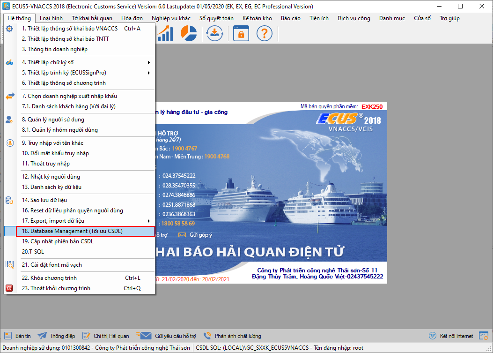
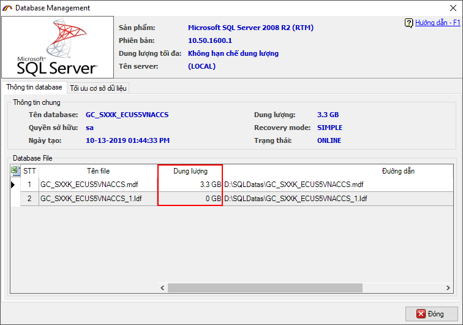
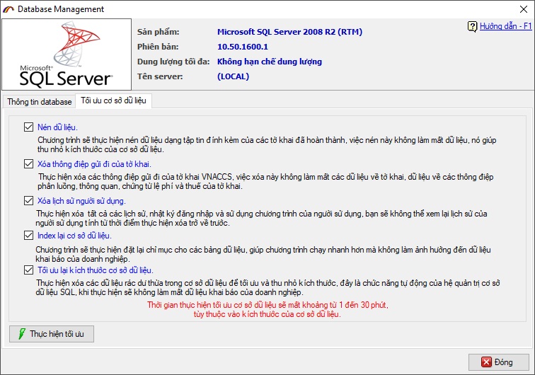
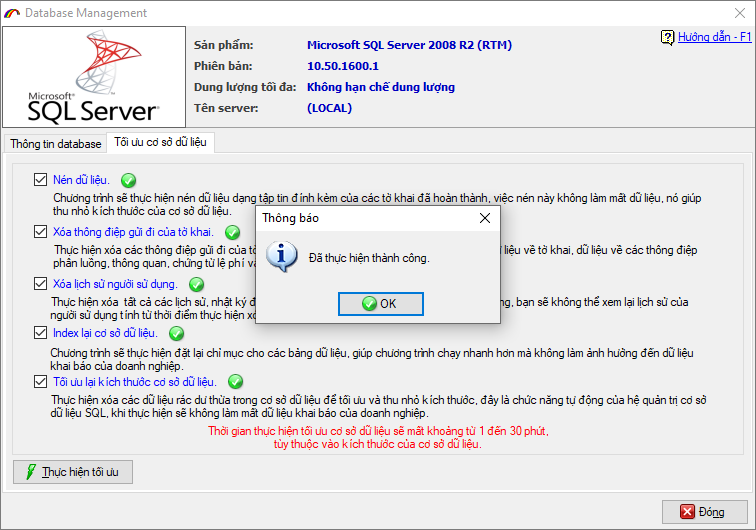

HƯỚNG DẪN CHỨC NĂNG TÔI ƯU CSDL
Khi thời gian sử dụng phần mềm tăng lên cùng với tần suất khai báo nhiều tờ khai, dung lượng cơ sở dữ liệu phần mềm sẽ tăng lên đáng kể do:
- Dữ liệu về khai báo chứng từ điện tử của tờ khai.
- Dữ liệu về các thông điệp thông báo của tờ khai do cơ quan Hải quan trả về.
- Dữ liệu về các lịch sử khai báo, thao tác dữ liệu được phần mềm lưu lại.
Để tối ưu lại cơ sở dữ liệu, làm giảm dung lượng lưu trữ, bạn cần thực hiện chạy chức năng tối ưu cơ sở dữ liệu do phần mềm cung cấp. Khi thực hiện, phần mềm sẽ:
- Nén dữ liệu dạng tệp tin đính kèm của những tờ khai đã hoàn thành (đã thông quan), giúp thu nhỏ kích thước của dữ liệu.
- Thực hiện xóa các thông điệp gửi đi của tờ khai VNACCS, việc xóa này không làm mất các dữ liệu về tờ khai, dữ liệu về các thông điệp phông luồng, thông quan, chứng từ lệ phí và thuế của tờ khai.
- Thực hiện xóa tất cả các lịch sử, nhật ký đăng nhập và sử dụng chương trình của người sử dụng, bạn sẽ không thể xem lại lịch sử của người sử dụng tính đến thời điểm thực hiền xóa trở về trước.
- Thực hiện đặt lại chỉ mục cho các bảng dữ liệu, giúp chương trình chạy nhanh hơn mà không làm ảnh hưởng đến dữ liệu khai báo của doanh nghiệp.
- Thực hiện xóa các dữ liệu rác dư thừa trong cơ sở dữ liệu để tối ưu và thu nhỏ kích thước, đây là chức năng từ động của hệ quản trị cơ sở dữ liệu SQL, khi thực hiện sẽ không làm mấy dữ liệu khai báo của doanh nghiệp.
Để thực hiện, bạn vào menu Hệ thống chọn mục Database Managerment (Tối ưu CSDL):

Chức năng thiết lập hiện ra như sau:

Tại đây phần mềm sẽ hiển thị thông tin về hệ quản trị CSDL bạn đang dùng, thông tin về dung lượng 2 file cơ sở dữ liệu
Bạn chuyển sang tab Tối ưu cơ sở dữ liệu để xem và thực hiện:

Tại đây có 5 lựa chọn để bạn chọn, thông thường phần mềm đã đánh dấu tất cả các mục, nếu bạn không muốn thực hiện mục nào thì bỏ chọn ở mục đó. Cuối cùng nhấn vào nút Thực hiện tối ưu và chờ đến khi có thông báo thành công (thời gian thực hiện nhanh hay chậm tùy thuộc vào kích thước cơ sở dữ liệu).

Bản quyền © thuộc về Công ty TNHH Phát triển công nghệ Thái Sơn